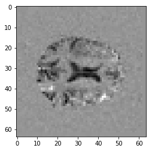
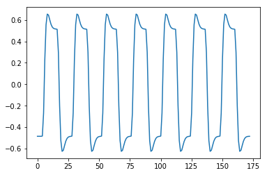
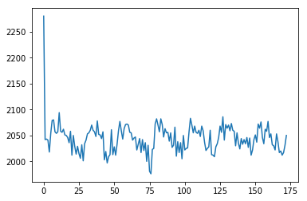
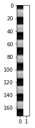

Replicating an FSL analysis
You may need:
If you don’t have FSL on your computer, you will also need to download and unpack the ds114 FEAT analysis directory archive.
I start by running an FSL analysis on the ds114_sub009_t2r1.nii image.
I chose the following options for simplicity of the model:
- stats only (not preprocessing);
- turn off FILM prewhitening;
- use the
ds114_sub009_t2r1_cond.txt3 column file to define my events; - use the double gamma HRF;
- turn off “Add temporal derivative”;
- turn off “Apply temporal filtering”.
See the file ds114_sub009_t2r1_simple.fsf for the analysis definition.
# We will need these later
from os import listdir # To list the files in a directory
from os.path import join as pjoin # To build file paths
# Our standard imports
import numpy as np # The array library
import numpy.linalg as npl # The linear algebra sub-package
np.set_printoptions(precision=4, suppress=True)
import matplotlib.pyplot as plt # The plotting library
%matplotlib inline
# The library to load images
# You might need to do "pip install nibabel" in the Terminal
import nibabel as nib
We investigate the FEAT output directory:
feat_dir = 'ds114_sub009_t2r1.feat'
listdir(feat_dir)
['design_cov.png',
'design.png',
'design.con',
'report_log.html',
'design.ppm',
'absbrainthresh.txt',
'design_cov.ppm',
'mask.nii.gz',
'design.trg',
'thresh_zstat1.nii.gz',
'rendered_thresh_zstat1.png',
'cluster_zstat1.html',
'tsplot',
'design.mat',
'design.frf',
'lmax_zstat1.txt',
'.files',
'report_prestats.html',
'.ramp.gif',
'mean_func.nii.gz',
'report_reg.html',
'report_poststats.html',
'logs',
'design.min',
'design.fsf',
'report_stats.html',
'cluster_zstat1.txt',
'rendered_thresh_zstat1.nii.gz',
'custom_timing_files',
'report.html',
'thresh_zstat1.vol',
'example_func.nii.gz',
'cluster_mask_zstat1.nii.gz',
'stats']
There is a stats subdirectory in the FEAT directory, with some interesting files:
stats_dir = pjoin(feat_dir, 'stats')
listdir(stats_dir)
['threshac1.nii.gz',
'tstat1.nii.gz',
'varcope1.nii.gz',
'dof',
'smoothness',
'pe1.nii.gz',
'cope1.nii.gz',
'sigmasquareds.nii.gz',
'logfile',
'zstat1.nii.gz']
The pe1.nii.gz contains the Parameter Estimate for the regressor:
pe_fname = pjoin(stats_dir, 'pe1.nii.gz')
pe_fname
'ds114_sub009_t2r1.feat/stats/pe1.nii.gz'
It’s an image, with one parameter estimate per voxel:
pe_img = nib.load(pe_fname)
pe_data = pe_img.get_fdata()
pe_data.shape
(64, 64, 30)
Here’s the 15th slab in the Parameter Estimate volume:
plt.imshow(pe_data[:, :, 14], cmap='gray')
<matplotlib.image.AxesImage at 0x117094208>

Compare this image to the first_activation notebook estimate we found.
The design matrix:
design_fname = pjoin(feat_dir, 'design.mat')
design_fname
'ds114_sub009_t2r1.feat/design.mat'
# Read contents of the design file
with open(design_fname, 'rt') as fobj:
design = fobj.read()
print(design)
/NumWaves 1
/NumPoints 173
/PPheights 1.280507e+00
/Matrix
-4.855490e-01
-4.855491e-01
-4.855491e-01
-4.855491e-01
-4.831242e-01
-2.687152e-01
2.311866e-01
5.548245e-01
6.547042e-01
6.450099e-01
6.010161e-01
5.601737e-01
5.345309e-01
5.219966e-01
5.169302e-01
5.151719e-01
5.122089e-01
2.976517e-01
-2.022853e-01
-5.259232e-01
-6.258029e-01
-6.161086e-01
-5.721148e-01
-5.312724e-01
-5.056295e-01
-4.930953e-01
-4.880289e-01
-4.862706e-01
-4.833076e-01
-2.687504e-01
2.311866e-01
5.548245e-01
6.547042e-01
6.450099e-01
6.010161e-01
5.601737e-01
5.345309e-01
5.219966e-01
5.169302e-01
5.151719e-01
5.122089e-01
2.976517e-01
-2.022853e-01
-5.259232e-01
-6.258029e-01
-6.161086e-01
-5.721148e-01
-5.312724e-01
-5.056295e-01
-4.930953e-01
-4.880289e-01
-4.862706e-01
-4.833076e-01
-2.687504e-01
2.311866e-01
5.548245e-01
6.547042e-01
6.450099e-01
6.010161e-01
5.601737e-01
5.345309e-01
5.219966e-01
5.169302e-01
5.151719e-01
5.122089e-01
2.976517e-01
-2.022853e-01
-5.259232e-01
-6.258029e-01
-6.161086e-01
-5.721148e-01
-5.312724e-01
-5.056295e-01
-4.930953e-01
-4.880289e-01
-4.862706e-01
-4.833076e-01
-2.687504e-01
2.311866e-01
5.548245e-01
6.547042e-01
6.450099e-01
6.010161e-01
5.601737e-01
5.345309e-01
5.219966e-01
5.169302e-01
5.151719e-01
5.122089e-01
2.976517e-01
-2.022853e-01
-5.259232e-01
-6.258029e-01
-6.161086e-01
-5.721148e-01
-5.312724e-01
-5.056295e-01
-4.930953e-01
-4.880289e-01
-4.862706e-01
-4.833076e-01
-2.687504e-01
2.311866e-01
5.548245e-01
6.547042e-01
6.450099e-01
6.010161e-01
5.601737e-01
5.345309e-01
5.219966e-01
5.169302e-01
5.151719e-01
5.122089e-01
2.976517e-01
-2.022853e-01
-5.259232e-01
-6.258029e-01
-6.161086e-01
-5.721148e-01
-5.312724e-01
-5.056295e-01
-4.930953e-01
-4.880289e-01
-4.862706e-01
-4.833076e-01
-2.687504e-01
2.311866e-01
5.548245e-01
6.547042e-01
6.450099e-01
6.010161e-01
5.601737e-01
5.345309e-01
5.219966e-01
5.169302e-01
5.151719e-01
5.122089e-01
2.976517e-01
-2.022853e-01
-5.259232e-01
-6.258029e-01
-6.161086e-01
-5.721148e-01
-5.312724e-01
-5.056295e-01
-4.930953e-01
-4.880289e-01
-4.862706e-01
-4.833076e-01
-2.687504e-01
2.311866e-01
5.548245e-01
6.547042e-01
6.450099e-01
6.010161e-01
5.601737e-01
5.345309e-01
5.219966e-01
5.169302e-01
5.151719e-01
5.122089e-01
2.976517e-01
-2.022853e-01
-5.259232e-01
-6.258029e-01
-6.161086e-01
-5.721148e-01
-5.312724e-01
-5.056295e-01
-4.930953e-01
-4.880289e-01
-4.862706e-01
-4.857324e-01
regressor = np.loadtxt(design_fname, comments='/')
regressor
array([-0.4855, -0.4855, -0.4855, -0.4855, -0.4831, -0.2687, 0.2312,
0.5548, 0.6547, 0.645 , 0.601 , 0.5602, 0.5345, 0.522 ,
0.5169, 0.5152, 0.5122, 0.2977, -0.2023, -0.5259, -0.6258,
-0.6161, -0.5721, -0.5313, -0.5056, -0.4931, -0.488 , -0.4863,
-0.4833, -0.2688, 0.2312, 0.5548, 0.6547, 0.645 , 0.601 ,
0.5602, 0.5345, 0.522 , 0.5169, 0.5152, 0.5122, 0.2977,
-0.2023, -0.5259, -0.6258, -0.6161, -0.5721, -0.5313, -0.5056,
-0.4931, -0.488 , -0.4863, -0.4833, -0.2688, 0.2312, 0.5548,
0.6547, 0.645 , 0.601 , 0.5602, 0.5345, 0.522 , 0.5169,
0.5152, 0.5122, 0.2977, -0.2023, -0.5259, -0.6258, -0.6161,
-0.5721, -0.5313, -0.5056, -0.4931, -0.488 , -0.4863, -0.4833,
-0.2688, 0.2312, 0.5548, 0.6547, 0.645 , 0.601 , 0.5602,
0.5345, 0.522 , 0.5169, 0.5152, 0.5122, 0.2977, -0.2023,
-0.5259, -0.6258, -0.6161, -0.5721, -0.5313, -0.5056, -0.4931,
-0.488 , -0.4863, -0.4833, -0.2688, 0.2312, 0.5548, 0.6547,
0.645 , 0.601 , 0.5602, 0.5345, 0.522 , 0.5169, 0.5152,
0.5122, 0.2977, -0.2023, -0.5259, -0.6258, -0.6161, -0.5721,
-0.5313, -0.5056, -0.4931, -0.488 , -0.4863, -0.4833, -0.2688,
0.2312, 0.5548, 0.6547, 0.645 , 0.601 , 0.5602, 0.5345,
0.522 , 0.5169, 0.5152, 0.5122, 0.2977, -0.2023, -0.5259,
-0.6258, -0.6161, -0.5721, -0.5313, -0.5056, -0.4931, -0.488 ,
-0.4863, -0.4833, -0.2688, 0.2312, 0.5548, 0.6547, 0.645 ,
0.601 , 0.5602, 0.5345, 0.522 , 0.5169, 0.5152, 0.5122,
0.2977, -0.2023, -0.5259, -0.6258, -0.6161, -0.5721, -0.5313,
-0.5056, -0.4931, -0.488 , -0.4863, -0.4857])
plt.plot(regressor)
[<matplotlib.lines.Line2D at 0x1192d4f60>]

np.mean(regressor)
-1.1560693609863562e-09
Remember the all_one_voxel notebook?
img = nib.load('ds114_sub009_t2r1.nii')
data = img.get_fdata()
voxel_time_course = data[42, 32, 19]
plt.plot(voxel_time_course)
[<matplotlib.lines.Line2D at 0x1193df588>]

Let’s do our own regression:
# The number of elements in the data (scans)
N = data.shape[-1]
N
173
# The design matrix for a simple regression
X = np.ones((N, 2))
X[:, 0] = regressor
plt.imshow(X, cmap='gray', aspect=0.1)
<matplotlib.image.AxesImage at 0x119174e10>

# Estimate the slope and intercept for this regression
y = voxel_time_course
B = npl.pinv(X).dot(y)
B
array([ 27.6368, 2044.7919])
What does FSL get for slope estimate at this voxel?
pe_data[42, 32, 19]
27.6368465423584
Remember our contrast, to select the slope of the regressor?
c = np.array([1, 0])
c.dot(B)
27.63684567343443
FSL has Contrast Of Parameter Estimate (COPE) files:
cope_fname = pjoin(stats_dir, 'cope1.nii.gz')
cope_img = nib.load(cope_fname)
cope_data = cope_img.get_fdata()
cope_data[42, 32, 19]
27.6368465423584
FSL also has a sigmasquareds.nii.gz file, that contains the variance estimate at each voxel:
ss_fname = pjoin(stats_dir, 'sigmasquareds.nii.gz')
ss_img = nib.load(ss_fname)
ss_data = ss_img.get_fdata()
ss_data[42, 32, 19]
600.3792724609375
Remember the fitted data, and the residuals?
fitted = X.dot(B)
residuals = y - fitted
We can calculate the variance with the degrees of freedom and the residuals:
# Degrees of freedom in the design.
# This is the number of independent columns in the design
df_design = npl.matrix_rank(X)
df_design
2
# Degrees of freedom remaining in the data
df_data = N - df_design
df_data
171
variance = np.sum(residuals ** 2) / df_data
variance
603.8902548558667
Oops - that is not the same as FSL. It turns out FSL thinks the data has an extra degree of freedom, in its calculation of variance:
fsl_df = df_data + 1
fsl_variance = np.sum(residuals ** 2) / fsl_df
fsl_variance
600.3792650020536
As you will see, it has (as of FSL 6.0) corrected for this - er - version of variance, in the output of the t-test.
Now let’s do a t-test by hand.
# Top of t - same as COPE
c = np.array([1, 0])
top_of_t = c.dot(B)
top_of_t
27.63684567343443
# Bottom of t - the standard error of the top part
design_part = c.dot(npl.inv(X.T.dot(X))).dot(c)
bottom_of_t = np.sqrt(fsl_variance * design_part)
bottom_of_t
3.6412936068015513
t = top_of_t / bottom_of_t
t
7.589842692666069
What does FSL get for this voxel?
t_fname = pjoin(stats_dir, 'tstat1.nii.gz')
t_img = nib.load(t_fname)
t_data = t_img.get_fdata()
t_data[42, 32, 19]
7.589842796325684
Finally, the z value. From FSL:
z_fname = pjoin(stats_dir, 'zstat1.nii.gz')
z_img = nib.load(z_fname)
z_data = z_img.get_fdata()
z_data[42, 32, 19]
7.036045551300049
This comes about from the p value for the t statistic, transformed back to a Z score:
# Get p value from t distribution
import scipy.stats as sps # Statistical distributions
p = sps.t(fsl_df).sf(t) # Survival function (1-cdf)
p
9.695004018853872e-13
# Get matching z score from p value
z = sps.norm().isf(p) # The Inverse Survival Function
z
7.038801702666201
Save these files out to check that R gives the same values:
np.savetxt('voxel_time_course.txt', voxel_time_course)
np.savetxt('regressor.txt', regressor)
Here is the R code to do a simple regression on those data files:
# Simple regression model in R
# Load the voxel time course
voxels = read.table('voxel_time_course.txt')$V1
# Load the convolved regressor
regressor = read.table('regressor.txt')$V1
# Fit linear model, where intercept is automatically added
res = lm(voxels ~ regressor)
# Show the result
print(summary(res))
On my machine that gives:
Call:
lm(formula = voxels ~ regressor)
Residuals:
Min 1Q Median 3Q Max
-55.435 -10.818 -2.201 9.052 248.627
Coefficients:
Estimate Std. Error t value Pr(>|t|)
(Intercept) 2044.792 1.868 1094.443 < 2e-16 ***
regressor 27.637 3.652 7.568 2.25e-12 ***
---
Signif. codes: 0 ‘***’ 0.001 ‘**’ 0.01 ‘*’ 0.05 ‘.’ 0.1 ‘ ’ 1
Residual standard error: 24.57 on 171 degrees of freedom
Multiple R-squared: 0.2509, Adjusted R-squared: 0.2465
F-statistic: 57.27 on 1 and 171 DF, p-value: 2.247e-12
# The residual standard error
np.sqrt(variance)
24.574178620166876